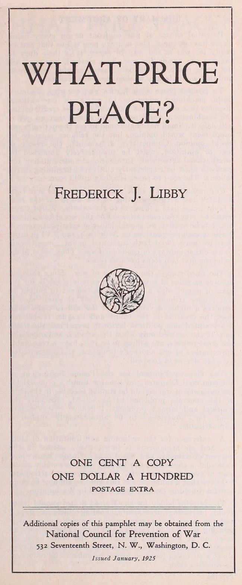

ONE CENT A COPY
ONE DOLLAR A HUNDRED
POSTAGE EXTRA
Additional copies of this pamphlet may be obtained from the
532 Seventeenth Street, N. W., Washington, D. C.
Issued January, 1925
Potential causes of war confront us on every hand. Peace has not come. Our military men tell us that getting ready for war is the way to peace. It is their duty to prepare the nation for war. This method, however, will not bring peace. It will only hasten another world war, and that would fatally weaken our white civilization.
To possess peace with justice and security, we must build machinery adequate to settle all international disputes that might cause war, and we must create behind the machinery a world opinion so strong that no nation will defy it. Small national armed forces theoretically can supplement world opinion, but the reliance must be on world opinion. Competitive armaments, the result of fear or ambition, must be progressively abolished by international agreement. International understanding and goodwill must be consistently cultivated beginning in the schools. The road to peace is a long uphill road.
For machinery we shall require a court for our legal disputes and a town meeting of the world for the rest. I favor immediate adherence to the existing World Court with the Hughes reservations. For the world town meeting, I believe that we should join the existing League of Nations with reservations on Articles X and XVI in order that we may avoid both legal and moral commitments to use either military or economic force. These seem to me to be the first two steps towards peace.
The third step is the outlawry of war. Since this will involve sacrifice of sovereignty in certain respects for the sake of peace, with a voluntary agreement to submit to the proper tribunal all disputes that threaten war, it requires a higher development of the will to peace than does the creation of the Court and League. It will fail if attempted as a political device to perpetuate the status quo. It can succeed only when the nations, and especially the great powers, are willing to be just, have a reasonable appreciation of one another’s problems, and are actuated by a fair degree of goodwill.
The Geneva Protocol for the Pacific Settlement of International Disputes and Senator Borah’s proposal for the outlawry of war should be studied together in the light of the concrete problems to be solved, especially the political and human problems. I believe that the provision for “sanctions” to be automatically applied is impracticable.
A conference for the reduction and limitation of land, sea, and air armaments is imperatively needed in the interest of economy and world peace. No one knows how soon such a conference can be held with reasonable assurance of even partial success. All nations must participate. I believe that a conference of this kind would now be more fruitful if held in Geneva than if held in Washington.
The interim policy for the United States should be to avoid increasing armaments, holding “defense days,” and the like. Our aggressive and growing militarism is bringing us no added security and is engendering fear and suspicion at home and abroad. On the other hand, as mighty armaments give a sense of security and stability—albeit a mistaken sense—I expect no substantial reduction by America alone.
We are farther from peace than we were in 1922. The French occupation of the Ruhr and the passage by Congress of the Japanese Exclusion Act were blows at the very heart of world peace. Hate has been growing in Europe. Militarism has been given a new lease of life in Germany and in Japan. The question of race equality has been made a permanently living issue to be coupled in future years with the problems raised by white domination over peoples that want to be free.
New Alsace Lorraines—such as the Polish Corridor—have been created by the Versailles Treaty. Religious and race antagonisms, kept acute by the economic imperialism of the white race, stir the awakening Mohammedan world.
Militarist and narrow nationalist groups in every country flood the press with propaganda breathing fear or hate. A new race in armaments has started. Our Monroe Doctrine, in view of the growing importance of the immigration question, contains dangerous possibilities insofar as it may be regarded as a commitment to go to war for Latin-American policies. Taken in conjunction with certain acts of aggression on our part and with the utterances of our jingoes, which are reprinted from the Rio Grande to Cape Horn, it injects poison constantly into our relations with Latin America, so that our military guarantee of two continents brings us no gratitude but only suspicion from our grown-up and unwilling wards.
The Dawes Plan is a fleeting ray of sunshine in a dark and ominous sky. We are not drifting into permanent peace.
Our military men tell us to get ready for war. This is their duty. We are surrounded by potential causes of war. In their optimistic or disingenuous moments, our militarists talk of “peace by preparedness.” “America must be so strong that no nation will dare attack her,” is a popular slogan.
Preparedness never has prevented war and it never will. Germany had that slogan. Look at[4] her! History shows that preparedness has always led to war. It can lead nowhere else.
We build; our rivals build—cruisers, airplanes, gas factories, submarines, armies. We build more; they build more. A race in armaments starts, and this always ends in war.
General Frederick B. Maurice of the British army says: “I used to believe that if you want peace, you must prepare for war; but I have come to see that, if you prepare for war thoroughly and efficiently, you will get war.”
Militarist theories predicate winning one’s wars. No nation won the last war. France is less secure than in 1914; England is less prosperous. All the “victor” nations are staggering under taxes and armaments; and there are the multitudinous dead.
Herbert Hoover at Los Angeles on Armistice Day declared that another great war would be the “cemetery of civilization.” Winston Churchill describes it as the “general doom.” His article entitled “Shall We Commit Suicide?” should be widely read.
A war of airplanes, poison gas, and hate—a baby killers’ war—the women conscripted and exterminated with the men—a city wiped out at a time—America’s cities almost as vulnerable as Europe’s, now that airships and submarines carry planes—such a war would surely be the twilight of the white civilization. We should perish as other civilizations in the brief span of human history have perished before us.
Consequently, while war is threatening from every quarter, preparedness for war offers no hope to any nation—not even the hope of victory. Increasing preparedness can only hasten the “general doom.” Our sole hope of survival lies in preparing adequately and intelligently for peace.
The way out of the perilous chaos into which godless and stupid policies have brought the world is a way that has proved uniformly successful. It has been tried so far in cities, states, and nations. It worked in the Maine township where I grew up, and it works equally well on a national scale in every civilized land on which the sun shines. It is now universally practised—except between nations.
We call it, roughly speaking, the substitution of law for war. To express it more accurately, our present task is to build machinery adequate to settle all disputes that might cause war, and to build behind that machinery a sound world opinion capable of bearing very heavy strains.
Machinery unsupported by public opinion is dead. On the other hand, public opinion without machinery through which to function is helpless.
These are the two main tasks. At the same time, armaments must be reduced by international conferences, war must be outlawed, and goodwill must be cultivated. The development of goodwill should be begun in the schools.
In Maine we had both a court and a town meeting to keep us out of war. The court dealt with our legal disputes and the town meeting with the rest. Both were supported by public opinion. The strength of this opinion made the work of our one policeman light. The system worked.
In California in ’49, men relied on pistols for justice and security. It did not work. Thugs could shoot as straight as honest men. So in California they shifted from the war system to the law system and were able before long to forbid the carrying of pistols. Obviously, this change of method was wrought without changing human nature.
The progress of civilization has been characterized by just such an extension of the reign of law. One step remains to be taken. Since it works everywhere else, we should enthrone law between nations. As I see it, the essential institutions necessary are those with which New Englanders are familiar—a court for the world’s legal disputes and a town meeting for the rest.
A court of justice has long been recognized by American statesmen as the cornerstone of world peace. It is clear to anyone who thinks that some provision must be made for the settlement of legal disputes. The Hague Tribunal is not a court of law, but a court of arbitration, and therefore cannot perform the tasks now under our consideration.
The Permanent Court of International Justice, popularly called the World Court, is the kind of court required. It has been accepted by 47 nations. It, too, meets at The Hague. It is largely the creation of American genius. Elihu[6] Root is its father. It is the practically universal judgment of the peace forces of America that our first step towards peace should be to join the existing World Court and with the Hughes reservations. The Hughes reservations protect us from inadvertently joining the League before we are ready. We accept this limitation. We will proceed one step at a time.
No substitute plan receives any support whatever, and for excellent reasons. This specific proposal has the endorsement of President Coolidge and of both the Republican and Democratic platforms. I regard joining the World Court with the Hughes reservations as this winter’s job (1924–1925). The Senate has had the measure before it in committee nearly two years. Meanwhile the world drifts towards war. It is reasonable to demand speedy action. We must all work to secure it through our Senators.
As a court can deal only with legal disputes, and as the most dangerous disputes named above are political and economic rather than legal, it is clear that the World Court alone will not end war. A town meeting of the world under some name is as necessary as the court. This fact is generally recognized and the idea of a League of Nations is nearly everywhere accepted.
The existing League of Nations I used to oppose on the ground that it seemed to me to be so tied up with the Versailles Treaty that it was more likely to cause war than to prevent it. I believe still that its coercive features are impracticable. I have come to the conviction, however, that America should now consider joining the League of Nations with such reservations on Articles X and XVI as will relieve us from every legal and moral obligation to go to war or to undertake any coercive economic measures that might lead to war. We should also be protected by reservation from any possible construction of obligation under the Versailles Treaty. I may add that my observation is that the genuine opposition to the League in this country is in reality opposition to the commitments indicated in these reservations.
Although the League is still in its formative period, it is, I believe, firmly established. Fifty-five out of 64 eligible nations belong to it. Turkey and Germany will probably join within twelve months. Then only Russia, the United States, Mexico and four small nations of those now eligible will remain outside.
Important decisions are being made by the[7] League. America should have a part in making all such decisions, because they inevitably affect our future. The world is now a community, and the welfare of each nation is closely wrapped up with the decisions of the rest.
The League fortunately was not made a political issue of the recent presidential campaign. Secretary Hughes for one took pains to say that he regarded our foreign relations as not an issue. Party politics should stop at the 3-mile limit. Secretary Hughes was also careful to say with reference to the League that it was against the “commitments” of the Covenant that he believed America had declared herself. I believe that we should join the League of Nations on the conditions stated and that we should do so during the present Administration. It is surely becoming increasingly difficult for us to stay outside.
With court and town meeting established, I believe that the effective outlawry of war is possible. War cannot be outlawed if this is proposed as a device to preserve the present division of territory in Europe. War cannot be outlawed for the protection of injustice or oppression anywhere. Such political chicanery in the outlawry of war would in the end meet with a fearful punishment.
The outlawry of war can succeed permanently, I think, only when accompanied by a general willingness on the part of nations to be just and by such an appreciation of others’ problems as will lead to a friendly spirit of “give and take.” Such jealous nationalism as has historically ruled our Senate is incompatible with it. “Vital interests” and “the national honor” cannot be made exceptions for private treatment, neither can “domestic” questions that are not exclusively domestic, as the American delegation justly urged at the recent opium convention.
The honest outlawry of war demands a higher development of the will to peace and justice than has been observed among great nations in the past. This is why it is the third rather than the first step to be taken. Yet, until aggressive war has been branded as a crime, and until the aggressor has been defined, the prevention of war will be haphazard, and the growth of an effective world opinion against war will be slow and uncertain.
The Geneva Protocol for the Pacific Settlement of International Disputes has been ratified by 16 nations including France. It deserves study side by side with the Borah Resolution. Personally I believe that “sanctions” which are to become effective automatically are impracticable. I cannot[8] imagine England seizing our property or blockading us because our Senate refused to accept a League decision.
Wise men make no threats, knowing that they may not want to carry them out and that perhaps to do so would be injustice and folly. Events have justified the founders of our Republic in giving the Supreme Court no force but public opinion to support its decisions as between states. The system has limped at times, but it has always worked better than attempted coercion would have done.
International Law is in its infancy. It is mainly concerned with procedure in war—a procedure no longer observed. It needs to be extended and codified. I believe that this can best be done by a commission of the League of Nations, which shall report from time to time to the League of Nations Assembly. Late news from Rome indicates that this is being provided for by the Council of the League.
Both the League of Nations and President Coolidge have given expression to the universal desire to reduce the burden of armaments in the interest of economy and world peace. Armaments, speaking generally, express a nation’s fears or the ambitions of its controlling classes. Reduction of armaments will follow increasing world security and still more extensively an increasing sense of security, which is a very different matter. We are used to our armaments as we are used to locking our doors at night. Neither actually gives security, although we have been brought up to think both do. I have shown above that armaments cannot give security from another world war, and that is the only security that would be worth having.
Increase of armaments increases the general sense of insecurity. Therefore, while waiting for another conference on the limitation of armaments, we should not hold “defense days” nor competitively multiply our cruisers, submarines, and other arms. President Coolidge is right in “standing pat” on the vast sum of $550,000,000 as enough for war preparation for the year 1926.
On the other hand, drastic reduction of armaments, except by international agreement, is psychologically impracticable for us in the present state of things. Hence another conference for the reduction and limitation of land, sea, and air forces is necessary. To be fruitful, it must include[9] all nations. France cannot disarm unless Russia does. Although it might seem that Washington would in some respects offer the best atmosphere for such a conference, it must be remembered that France has not yet ratified some of the important treaties adopted here three years ago (1921). Delegates achieve nothing permanent if they go beyond public sentiment at home. Consequently, as the League of Nations is considering such a conference, I believe it might be well for it to meet in Geneva. There would, perhaps, be greater probability that its decisions would be accepted by the powers represented.
Machinery will not save the world. It is dead by itself. When legislation gets too far ahead of public opinion, we have trouble in enforcing our laws. Similarly the weakness of the League of Nations has been mainly the weakness of the public opinion behind the League. It will be remembered that the League was set up at a time when to a considerable degree the world was skeptical of its practicability.
Press opinion in France scoffed at “Wilson’s ideology.” Lloyd George exacted payment for his support. Our Senate rejected the League through the efforts of a determined minority of doubters. Puny and unwelcome, it lived by the faith of a few men until Italy last year, by defying it, proved to the small nations its vital worth.
Now the terrors of the future have made the League the cornerstone of the foreign policy of several states including France. It is flouted still by the nationalists of every country when it stands in their way; but even they do not dare try to destroy it. Without it no one sees any hope ahead—nothing but universal warfare and wholesale extermination until the end.
The change, be it noted, has been in public opinion. The small nations saw in the attack on Greece the fact that their existence rests with the League. French liberals perceived that they could reduce the burden of armaments and achieve security only through the League. Statesmen, leaders of thought everywhere, discovered that they were leaning upon it more and more heavily as they looked ahead into the dark.
Winston Churchill, sincere imperialist though he be, writes: “It is through the League of Nations alone that the path to safety and salvation can be found. To sustain and aid the League of Nations is[10] the duty of all.” His government failed to live up to his wise admonition in the recent crisis in Egypt, but it is something that he should have recognized the obligation in principle. The League will progressively destroy imperialism, one may hope.
We have only to read our morning paper thoughtfully to become aware that the sound world opinion required to make the new machinery of justice effective will not come of itself. It must be built by the conscious and purposeful cooperation of governments and of all good citizens.
England’s conservative government has just thrown away a precious opportunity of this kind in refusing to submit to the League her quarrel with Egypt and resorting to the coercive policy of the old diplomacy, seizing the opportunity of a murder to advance the interests of the empire.
The thirst for liberty that is stirring North Africa, the Near East, and India cannot be quenched by repression. “Only a few agitators are to blame for this unrest,” say the old-school imperialists. That is what they said with some justice of the American Colonies once. England would have been wiser to strengthen the League now against the difficult days that everyone can see ahead of the British Empire.
It is by such voluntary submission of important matters to the Court and League by governments strong enough to evade doing so that in the last instance our world opinion must be built.
Despite two glaring instances of Congressional insularity that are at present in our minds—passage of the Japanese Exclusion Act and two years’ delay in taking up the World Court—in the long run and haltingly a democratic government obeys the people’s will. If we want international law and order in place of war and chaos, we must say so and keep saying so.
How is public opinion created? How was Mr. Coolidge elected president? Talk, talk, talk and talk, talk, talk. Not, as it happens in this instance, by Mr. Coolidge but by those who wanted him for president. It was talk in the press and talk from the soapbox and talk in the circles in which one moved, talk with convincing earnestness, talk with arguments that reached down to the motives on which men really act.
Similarly in furthering the only policy that can[11] save our country and our civilization from being ruined by another war, we must talk, talk, talk and talk, talk, talk—in the press, from the pulpit, in the schoolroom, in books, from the billboards, in public meetings, and through the programs of club and lodge and grange. We must work as men in haste, remembering that we are sure only of this “period of exhaustion,” in which to build machinery and world opinion, both strong enough to bear incredible strain. It will be only as by the skin of our teeth that the world will get by some of the danger corners that we all can see must be passed.
Why America particularly? Because what is whispered in America today echoes and re-echoes around the world.
All movements that succeed start in the schools. It is in the schools of the world that the peace movement will succeed or fail. If the old style militant nationalism continues to be taught there—the arrogance, the hate of past days—there is no hope.
Hate is being taught now in the schools of every land and sometimes it is called patriotism. For myself, I learned to love France and to hate England as a schoolboy, through the lessons of the Revolutionary War. These lessons could have been taught without breeding hate, I think; but they weren’t.
South and North have not yet agreed on a history of the United States. Both are handing down from generation to generation the animosities of the Civil War by using different textbooks with utterly different viewpoints. They call this loyalty. It is loyalty to the past but not to the future. The future demands that the glorification of war with its hatreds shall cease.
Secretary Hughes, in the course of his famous speech, May 15, which, whether intentionally or not, cut the ground from under “Defense Day,” said, “There is only one avenue to peace. That is in the settlement of actual differences and the removal of ill will. All else is talk, form, and pretense.”
After speaking of the settlement of differences through “institutions of justice,” he went on as follows: “Between friends any difficulty can be settled. There is no substitute for goodwill. There is no mechanism of intercourse that can dispense with it.”
I am convinced of the correctness of Secretary Hughes’ conclusion. We must be better men if our[12] race is to survive. A civilization shot through with hate cannot continue long after it is fully equipped with poison gas and airplanes. Even for self-preservation we must cultivate goodwill—goodwill between classes and religions and nations and races.
We must subdue in our own hearts the swiftly rising prejudice by nursing, often by an effort of the will, the kindly thought that follows tardily. We must seek to know and understand those we hate; for then, as Charles Lamb discovered, we cannot hate them. Cooperation must replace isolation; progressive world organization must replace international anarchy; and, above all, the spirit of the team must replace “grandstand playing” and national egotism.
The success of our national experiments in “audacious friendliness”—returning the Boxer indemnity to China, feeding the children of Europe, aiding stricken Japan; the success of Ramsay MacDonald’s pursuit of the same policy, which changed the atmosphere of Europe markedly for the better in six months; the success of Herriot in his policy of “rapprochement” with Germany, following Poincare’s ghastly failure with coercion—all this goes to show that international relations are but human problems and that the spirit that “removes” our personal “mountains” will be similarly triumphant between nations. Our realists are going to discover some day to their astonishment that the “practical” policy they are seeking, the policy that will bring security with justice and peace, is this very policy of audacious friendliness functioning through appropriate machinery. We can climb up to peace in no other way.
Model Printing Company, Washington